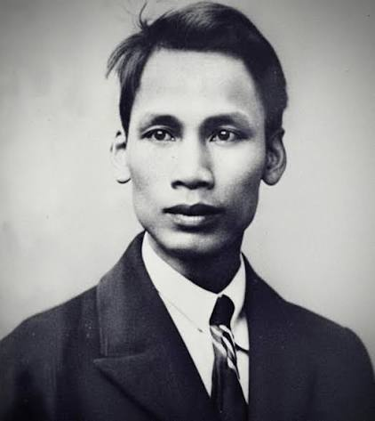
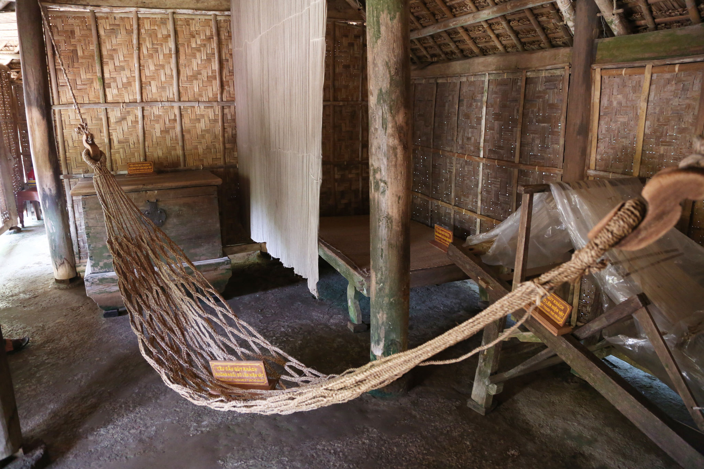
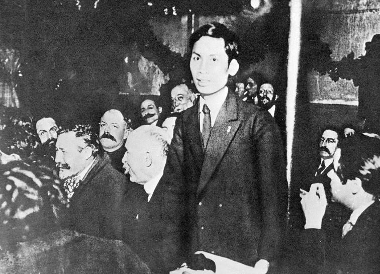
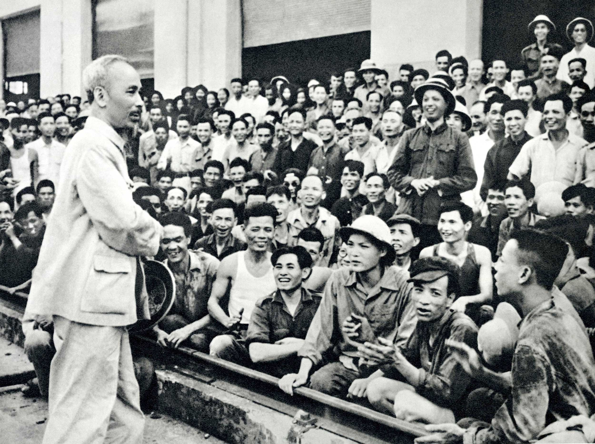

Chủ tịch Hồ Chí Minh sinh ngày 19/5/1890 tại làng Hoàng Trù, huyện
Nam Đàn, tỉnh Nghệ An. Tên lúc nhỏ của Người là Nguyễn Sinh Cung,
sau này là Nguyễn Tất Thành. Người lớn lên trong một gia đình nhà
nho có tinh thần yêu nước. Cha là ông Nguyễn Sinh Sắc, mẹ là bà
Hoàng Thị Loan. Từ nhỏ, Nguyễn Sinh Cung đã được tiếp xúc với việc
học và chứng kiến cuộc sống của người dân dưới ách đô hộ của thực
dân Pháp.
Những năm niên thiếu, Người sống và học tập ở nhiều nơi, trong đó
có Nghệ An và Huế. Chứng kiến nỗi khổ của đồng bào cùng những
phong trào yêu nước đương thời, Nguyễn Tất Thành sớm hình thành
mong muốn tìm một con đường giúp đất nước giành lại độc lập. Quyết
tâm ấy đưa Người đến lựa chọn quan trọng vào năm 1911: rời Việt
Nam để tìm đường cứu nước.

Ngày 5/6/1911, Nguyễn Tất Thành rời bến Nhà Rồng ở Sài Gòn trên
một con tàu Pháp. Trong những năm tiếp theo, Người đi qua nhiều
nước, làm nhiều công việc và trực tiếp quan sát đời sống của người
lao động cũng như các dân tộc thuộc địa. Những trải nghiệm ấy giúp
Người hiểu rằng khát vọng độc lập của Việt Nam có liên hệ với cuộc
đấu tranh chống áp bức ở nhiều nơi trên thế giới.
Cuối năm 1917, Người trở lại Pháp và tham gia các hoạt động của
người Việt yêu nước. Năm 1919, với tên Nguyễn Ái Quốc, Người gửi
bản yêu sách của nhân dân An Nam tới Hội nghị Versailles, đòi các
quyền tự do và bình đẳng. Năm 1920, sau khi tìm hiểu luận cương
của Lênin về vấn đề dân tộc và thuộc địa, Nguyễn Ái Quốc tham dự
Đại hội Tours và tham gia thành lập Đảng Cộng sản Pháp. Đây là
bước ngoặt trong quá trình tìm đường giải phóng dân tộc của Người.

Trong thập niên 1920, Nguyễn Ái Quốc hoạt động ở Pháp, Liên Xô và
Trung Quốc. Người viết báo, nghiên cứu, truyền bá tư tưởng cách
mạng và đào tạo những người trẻ Việt Nam yêu nước. Tại Quảng Châu,
năm 1925, Người thành lập Hội Việt Nam Cách mạng Thanh niên, mở
các lớp huấn luyện cán bộ và cho ra đời báo Thanh Niên. Các bài
giảng của Người sau đó được tập hợp trong tác phẩm Đường Kách
mệnh.
Tháng 2/1930, Nguyễn Ái Quốc chủ trì hội nghị hợp nhất các tổ chức
cộng sản, thành lập Đảng Cộng sản Việt Nam. Ngày 28/1/1941, sau
hơn 30 năm xa Tổ quốc, Người trở về Việt Nam. Tại căn cứ cách
mạng, Người cùng các đồng chí chuẩn bị lực lượng, thành lập Mặt
trận Việt Minh và hướng tới mục tiêu giành độc lập. Tháng 8/1945,
cách mạng giành thắng lợi; ngày 2/9/1945, tại Quảng trường Ba
Đình, Hồ Chí Minh đọc bản Tuyên ngôn Độc lập, khai sinh nước Việt
Nam Dân chủ Cộng hòa.

Sau ngày độc lập, Chủ tịch Hồ Chí Minh cùng Chính phủ lãnh đạo đất
nước vượt qua nhiều khó khăn và bảo vệ nền độc lập vừa giành được.
Khi cuộc kháng chiến chống thực dân Pháp bùng nổ, Người kêu gọi
toàn dân đoàn kết, tham gia kháng chiến. Cuộc kháng chiến kết thúc
với chiến thắng Điện Biên Phủ năm 1954.
Từ năm 1954, Chủ tịch Hồ Chí Minh cùng Trung ương Đảng lãnh đạo
công cuộc xây dựng miền Bắc, đồng thời tiếp tục đấu tranh vì mục
tiêu thống nhất đất nước. Bên cạnh công việc lãnh đạo, hình ảnh
Người thăm công nhân, nông dân, chiến sĩ và thiếu nhi đã trở nên
gần gũi với nhiều thế hệ. Người qua đời tại Hà Nội ngày 2/9/1969,
để lại bản Di chúc cùng mong muốn đất nước hòa bình, thống nhất.
